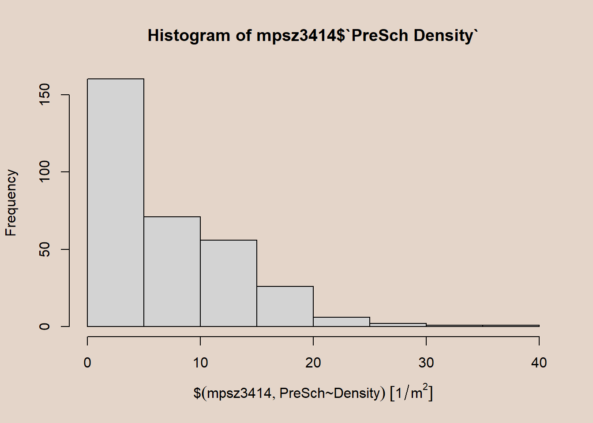

pacman::p_load(sf, tidyverse)1 Overview
In this hands-on exercise, we learn how to import, wrangle, integrate, and process geographically referenced data sets using appropriate R packages.
2 Data Acquisition
| Type | Details | Screenshot |
|---|---|---|
| Geospatial | Master Plan 2014 Subzone Boundary Web Source: data.gov.sg |
|
| Geospatial |
Source: data.gov.sg |
|
| Geospatial |
Source: LTA Data Mall |
|
| Aspatial |
Source: Inside AirBnB |
3 Loading Packages
| Package | Description |
|---|---|
| tidyverse | A collection of functions for performing data science task such as importing, tidying, wrangling data and visualising data. Within tidyverse, we will explore the use of readr for importing csv files, readxl for importing Excel worksheets, tidyr for manipulating data, dplyr for data transformation, and ggplot2 for visualising data. |
| sf | For importing, managing, and processing geospatial data. |
Unzip these downloads and save them into geospatial and aspatial sub-folders of the data folder.
The code chunk below installs and loads sf and tidyverse packages into R environment using p_load from the pacman package.
4 Importing Geospatial Data
4.1 Import polygon feature data in shapefile format
The code chunk below uses st_read() function of sf package:
- read simple features form file/database, or retrieve layer names and their geometry types(s)
- imports
MP14_SUBZONE_WEB_PLshapefile into R as polygon feature data frame dsn= defines data path;layer= provide the shapefile name
mpsz = st_read(dsn = "data/geospatial",
layer = "MP14_SUBZONE_WEB_PL")Reading layer `MP14_SUBZONE_WEB_PL' from data source
`C:\kytjy\ISSS626-GAA\Hands-on_Ex\Hands-on_Ex01\data\geospatial'
using driver `ESRI Shapefile'
Simple feature collection with 323 features and 15 fields
Geometry type: MULTIPOLYGON
Dimension: XY
Bounding box: xmin: 2667.538 ymin: 15748.72 xmax: 56396.44 ymax: 50256.33
Projected CRS: SVY21Interpretation
- Geometry type = multipolygon features
- 323 multipolygon features and 15 fields in mpsz simple feature data frame
- Projected CRS = svy21 projected coordinates systems
- Bounding box provides x extend and y extend of the data
4.2 Import polyline feature data in shapefile form
The code chunk below imports CyclingPath shapefile into R as line feature data frame
cyclingpath = st_read(dsn = "data/geospatial",
layer = "CyclingPathGazette")Reading layer `CyclingPathGazette' from data source
`C:\kytjy\ISSS626-GAA\Hands-on_Ex\Hands-on_Ex01\data\geospatial'
using driver `ESRI Shapefile'
Simple feature collection with 3138 features and 2 fields
Geometry type: MULTILINESTRING
Dimension: XY
Bounding box: xmin: 11854.32 ymin: 28347.98 xmax: 42644.17 ymax: 48948.15
Projected CRS: SVY21Interpretation
- 3138 features and 2 fields in cyclingpath linestring feature data
- Projected CRS = svy21 projected coordinates system
4.3 Import GIS data in kml format
PreSchoolsLocation is in kml format. Below code chunk used to import kml into R.
preschool = st_read("data/geospatial/PreSchoolsLocation.kml")Reading layer `PRESCHOOLS_LOCATION' from data source
`C:\kytjy\ISSS626-GAA\Hands-on_Ex\Hands-on_Ex01\data\geospatial\PreSchoolsLocation.kml'
using driver `KML'
Simple feature collection with 2290 features and 2 fields
Geometry type: POINT
Dimension: XYZ
Bounding box: xmin: 103.6878 ymin: 1.247759 xmax: 103.9897 ymax: 1.462134
z_range: zmin: 0 zmax: 0
Geodetic CRS: WGS 84Interpretation
- preschool = point feature data frame
- 2290 features and 2 fields
- Geodetic CRS = WGS84 coordinates system
5 Checking the Content of a Simple Feature Data Frame
In this sub-section, we will learn different ways to retrieve information related to the content of a simple feature data frame.
- Column in sf data.frame that contains geometries is a list, of class sfc
- Can be retrieved by
mpsz$geomormpsz\[[1]], elsest_geometry()can also be used
st_geometry(mpsz)Geometry set for 323 features
Geometry type: MULTIPOLYGON
Dimension: XY
Bounding box: xmin: 2667.538 ymin: 15748.72 xmax: 56396.44 ymax: 50256.33
Projected CRS: SVY21
First 5 geometries:The code above prints out basic information of the feature class, eg type of geometry, geographic extent of feature and coordinate system of the data.
glimpse()report shows data types of each field- FMEL-UPD_D field = date; X_ADDR, Y_ADDR, SHAPE_L, SHAPE_AREA = double-precision values
glimpse(mpsz)Rows: 323
Columns: 16
$ OBJECTID <int> 1, 2, 3, 4, 5, 6, 7, 8, 9, 10, 11, 12, 13, 14, 15, 16, 17, …
$ SUBZONE_NO <int> 1, 1, 3, 8, 3, 7, 9, 2, 13, 7, 12, 6, 1, 5, 1, 1, 3, 2, 2, …
$ SUBZONE_N <chr> "MARINA SOUTH", "PEARL'S HILL", "BOAT QUAY", "HENDERSON HIL…
$ SUBZONE_C <chr> "MSSZ01", "OTSZ01", "SRSZ03", "BMSZ08", "BMSZ03", "BMSZ07",…
$ CA_IND <chr> "Y", "Y", "Y", "N", "N", "N", "N", "Y", "N", "N", "N", "N",…
$ PLN_AREA_N <chr> "MARINA SOUTH", "OUTRAM", "SINGAPORE RIVER", "BUKIT MERAH",…
$ PLN_AREA_C <chr> "MS", "OT", "SR", "BM", "BM", "BM", "BM", "SR", "QT", "QT",…
$ REGION_N <chr> "CENTRAL REGION", "CENTRAL REGION", "CENTRAL REGION", "CENT…
$ REGION_C <chr> "CR", "CR", "CR", "CR", "CR", "CR", "CR", "CR", "CR", "CR",…
$ INC_CRC <chr> "5ED7EB253F99252E", "8C7149B9EB32EEFC", "C35FEFF02B13E0E5",…
$ FMEL_UPD_D <date> 2014-12-05, 2014-12-05, 2014-12-05, 2014-12-05, 2014-12-05…
$ X_ADDR <dbl> 31595.84, 28679.06, 29654.96, 26782.83, 26201.96, 25358.82,…
$ Y_ADDR <dbl> 29220.19, 29782.05, 29974.66, 29933.77, 30005.70, 29991.38,…
$ SHAPE_Leng <dbl> 5267.381, 3506.107, 1740.926, 3313.625, 2825.594, 4428.913,…
$ SHAPE_Area <dbl> 1630379.27, 559816.25, 160807.50, 595428.89, 387429.44, 103…
$ geometry <MULTIPOLYGON [m]> MULTIPOLYGON (((31495.56 30..., MULTIPOLYGON (…head()used to display complete information of a feature objectn = 5shows the selected number of records to display
head(mpsz, n=5)Simple feature collection with 5 features and 15 fields
Geometry type: MULTIPOLYGON
Dimension: XY
Bounding box: xmin: 25867.68 ymin: 28369.47 xmax: 32362.39 ymax: 30435.54
Projected CRS: SVY21
OBJECTID SUBZONE_NO SUBZONE_N SUBZONE_C CA_IND PLN_AREA_N
1 1 1 MARINA SOUTH MSSZ01 Y MARINA SOUTH
2 2 1 PEARL'S HILL OTSZ01 Y OUTRAM
3 3 3 BOAT QUAY SRSZ03 Y SINGAPORE RIVER
4 4 8 HENDERSON HILL BMSZ08 N BUKIT MERAH
5 5 3 REDHILL BMSZ03 N BUKIT MERAH
PLN_AREA_C REGION_N REGION_C INC_CRC FMEL_UPD_D X_ADDR
1 MS CENTRAL REGION CR 5ED7EB253F99252E 2014-12-05 31595.84
2 OT CENTRAL REGION CR 8C7149B9EB32EEFC 2014-12-05 28679.06
3 SR CENTRAL REGION CR C35FEFF02B13E0E5 2014-12-05 29654.96
4 BM CENTRAL REGION CR 3775D82C5DDBEFBD 2014-12-05 26782.83
5 BM CENTRAL REGION CR 85D9ABEF0A40678F 2014-12-05 26201.96
Y_ADDR SHAPE_Leng SHAPE_Area geometry
1 29220.19 5267.381 1630379.3 MULTIPOLYGON (((31495.56 30...
2 29782.05 3506.107 559816.2 MULTIPOLYGON (((29092.28 30...
3 29974.66 1740.926 160807.5 MULTIPOLYGON (((29932.33 29...
4 29933.77 3313.625 595428.9 MULTIPOLYGON (((27131.28 30...
5 30005.70 2825.594 387429.4 MULTIPOLYGON (((26451.03 30...6 Plotting the Geospatial Data
plot()visualises geospatial features but meant for taking a quick look. For high cartographic quality plots, packages such as tmap should be used.- Default plot is a multi-plot of all attributes
par(bg = '#E4D5C9')
plot(mpsz)To plot only the geometry:
par(bg = '#E4D5C9')
plot(st_geometry(mpsz))To plot the sf object by using specific attribute:
par(bg = '#E4D5C9')
plot(mpsz["PLN_AREA_N"])7 Working with Projection
Map projection is an important property of a geospatial data. In order to perform geoprocessing using two geospatial data, we need to ensure that both geospatial data are projected using similar coordinate system.
Projection Transformation refers to projection of a simple feature data from one coordinate system to another coordinate system.
Singapore’s SVY21
Coordinate systems allow for common locations to be integrated into geographic datasets. The most commonly used coordinate system today is the latitude, longitude and height system in which the Equator(which lies halfway between the poles) and the Prime Meridian(a line through Greenwich) are reference lines used to measure latitude and longitude.
Projected coordinate systems and geodetic data are needed due to the Earth’s imperfect ellipsoid. Localised datums (such as SVY21 in Singapore’s case) can provide a more accurate representation of the area of than the global WGS 84 datum.
The coordinate systems map the Earth’s spherical surface onto a two-dimensional Cartesian coordinate plane. Thus, projected coordinate systems are referred to as map projections.

7.1 Assigning EPSG code to a simple feature data frame
A common issue during importing geospatial data into R is that the coordinate system of the source data was either missing (such as due to missing .proj for ESRI shapefile) or wrongly assigned during the importing process.
Below example shows the coordinate system of mpsz simple feature data frame by using st_crs() of sf package.
st_crs(mpsz)Coordinate Reference System:
User input: SVY21
wkt:
PROJCRS["SVY21",
BASEGEOGCRS["SVY21[WGS84]",
DATUM["World Geodetic System 1984",
ELLIPSOID["WGS 84",6378137,298.257223563,
LENGTHUNIT["metre",1]],
ID["EPSG",6326]],
PRIMEM["Greenwich",0,
ANGLEUNIT["Degree",0.0174532925199433]]],
CONVERSION["unnamed",
METHOD["Transverse Mercator",
ID["EPSG",9807]],
PARAMETER["Latitude of natural origin",1.36666666666667,
ANGLEUNIT["Degree",0.0174532925199433],
ID["EPSG",8801]],
PARAMETER["Longitude of natural origin",103.833333333333,
ANGLEUNIT["Degree",0.0174532925199433],
ID["EPSG",8802]],
PARAMETER["Scale factor at natural origin",1,
SCALEUNIT["unity",1],
ID["EPSG",8805]],
PARAMETER["False easting",28001.642,
LENGTHUNIT["metre",1],
ID["EPSG",8806]],
PARAMETER["False northing",38744.572,
LENGTHUNIT["metre",1],
ID["EPSG",8807]]],
CS[Cartesian,2],
AXIS["(E)",east,
ORDER[1],
LENGTHUNIT["metre",1,
ID["EPSG",9001]]],
AXIS["(N)",north,
ORDER[2],
LENGTHUNIT["metre",1,
ID["EPSG",9001]]]]Interpretation:
Although mpsz data frame is projected in svy21 but EPSG is indicated as 9001. Correct EPSG code should be 3414. To assign correct EPS code to mpsz data frame, st_set_crs() of sf package can be used.
mpsz3414 <- st_set_crs(mpsz, 3414)Check CSR again using the code chunk below. Notice that EPSG code is now 3414.
st_crs(mpsz3414)Coordinate Reference System:
User input: EPSG:3414
wkt:
PROJCRS["SVY21 / Singapore TM",
BASEGEOGCRS["SVY21",
DATUM["SVY21",
ELLIPSOID["WGS 84",6378137,298.257223563,
LENGTHUNIT["metre",1]]],
PRIMEM["Greenwich",0,
ANGLEUNIT["degree",0.0174532925199433]],
ID["EPSG",4757]],
CONVERSION["Singapore Transverse Mercator",
METHOD["Transverse Mercator",
ID["EPSG",9807]],
PARAMETER["Latitude of natural origin",1.36666666666667,
ANGLEUNIT["degree",0.0174532925199433],
ID["EPSG",8801]],
PARAMETER["Longitude of natural origin",103.833333333333,
ANGLEUNIT["degree",0.0174532925199433],
ID["EPSG",8802]],
PARAMETER["Scale factor at natural origin",1,
SCALEUNIT["unity",1],
ID["EPSG",8805]],
PARAMETER["False easting",28001.642,
LENGTHUNIT["metre",1],
ID["EPSG",8806]],
PARAMETER["False northing",38744.572,
LENGTHUNIT["metre",1],
ID["EPSG",8807]]],
CS[Cartesian,2],
AXIS["northing (N)",north,
ORDER[1],
LENGTHUNIT["metre",1]],
AXIS["easting (E)",east,
ORDER[2],
LENGTHUNIT["metre",1]],
USAGE[
SCOPE["Cadastre, engineering survey, topographic mapping."],
AREA["Singapore - onshore and offshore."],
BBOX[1.13,103.59,1.47,104.07]],
ID["EPSG",3414]]7.2 Transforming the projection of preschool from wgs84 to svy21
In geospatial analytics, it is common to transform original data from geographic coordinate system to projected coordinate system, as geographic coordinate system is not appropriate if the analysis need to use distance and/or area measurement
Let us take preschool simple feature data frame as an example. The print below reveals that it is in wgs84 coordinate system.
preschool = st_read("data/geospatial/PreSchoolsLocation.kml")Reading layer `PRESCHOOLS_LOCATION' from data source
`C:\kytjy\ISSS626-GAA\Hands-on_Ex\Hands-on_Ex01\data\geospatial\PreSchoolsLocation.kml'
using driver `KML'
Simple feature collection with 2290 features and 2 fields
Geometry type: POINT
Dimension: XYZ
Bounding box: xmin: 103.6878 ymin: 1.247759 xmax: 103.9897 ymax: 1.462134
z_range: zmin: 0 zmax: 0
Geodetic CRS: WGS 84In this scenario, st_set_crs() is not appropriate and st_transform() of sf package should be used. This is because we need to reproject preschool from one coordinate system to another coordinate system mathematically.
The code chunk below performs the projection transformation:
preschool3414 <- st_transform(preschool,
crs = 3414)head(preschool3414, n=5)Simple feature collection with 5 features and 2 fields
Geometry type: POINT
Dimension: XYZ
Bounding box: xmin: 24821.92 ymin: 31299.16 xmax: 28844.56 ymax: 46303.16
z_range: zmin: 0 zmax: 0
Projected CRS: SVY21 / Singapore TM
Name
1 kml_1
2 kml_2
3 kml_3
4 kml_4
5 kml_5
Description
1 <center><table><tr><th colspan='2' align='center'><em>Attributes</em></th></tr><tr bgcolor="#E3E3F3"> <th>CENTRE_NAME</th> <td>CHILDREN'S COVE PRESCHOOL PTE.LTD.</td> </tr><tr bgcolor=""> <th>CENTRE_CODE</th> <td>PT9390</td> </tr><tr bgcolor="#E3E3F3"> <th>INC_CRC</th> <td>498CC9FE48CC94D4</td> </tr><tr bgcolor=""> <th>FMEL_UPD_D</th> <td>20211201093631</td> </tr></table></center>
2 <center><table><tr><th colspan='2' align='center'><em>Attributes</em></th></tr><tr bgcolor="#E3E3F3"> <th>CENTRE_NAME</th> <td>CHILDREN'S COVE PTE. LTD.</td> </tr><tr bgcolor=""> <th>CENTRE_CODE</th> <td>PT8675</td> </tr><tr bgcolor="#E3E3F3"> <th>INC_CRC</th> <td>22877550804213FD</td> </tr><tr bgcolor=""> <th>FMEL_UPD_D</th> <td>20211201093631</td> </tr></table></center>
3 <center><table><tr><th colspan='2' align='center'><em>Attributes</em></th></tr><tr bgcolor="#E3E3F3"> <th>CENTRE_NAME</th> <td>CHILDREN'S VINEYARD PRESCHOOL PTE. LTD</td> </tr><tr bgcolor=""> <th>CENTRE_CODE</th> <td>PT9308</td> </tr><tr bgcolor="#E3E3F3"> <th>INC_CRC</th> <td>B2FE90E44AD494E3</td> </tr><tr bgcolor=""> <th>FMEL_UPD_D</th> <td>20211201093631</td> </tr></table></center>
4 <center><table><tr><th colspan='2' align='center'><em>Attributes</em></th></tr><tr bgcolor="#E3E3F3"> <th>CENTRE_NAME</th> <td>CHILDTIME CARE & DEVELOPMENT CENTRE PTE.LTD.</td> </tr><tr bgcolor=""> <th>CENTRE_CODE</th> <td>PT9122</td> </tr><tr bgcolor="#E3E3F3"> <th>INC_CRC</th> <td>1384CDC0D14B76A1</td> </tr><tr bgcolor=""> <th>FMEL_UPD_D</th> <td>20211201093631</td> </tr></table></center>
5 <center><table><tr><th colspan='2' align='center'><em>Attributes</em></th></tr><tr bgcolor="#E3E3F3"> <th>CENTRE_NAME</th> <td>CHILTERN HOUSE</td> </tr><tr bgcolor=""> <th>CENTRE_CODE</th> <td>PT2070</td> </tr><tr bgcolor="#E3E3F3"> <th>INC_CRC</th> <td>FB24EAA6E73B2723</td> </tr><tr bgcolor=""> <th>FMEL_UPD_D</th> <td>20211201093631</td> </tr></table></center>
geometry
1 POINT Z (25089.46 31299.16 0)
2 POINT Z (27189.07 32792.54 0)
3 POINT Z (28844.56 36773.76 0)
4 POINT Z (24821.92 46303.16 0)
5 POINT Z (28637.82 35038.49 0)Interpretation:
Notice that dataframe is in svy21 projected coordinate system now. In Bounding box:, the values are greater than 0-360 range of decimal degree commonly used by most of the geographic coordinate systems.
8 Importing and Converting an Aspatial Data
Datasets such as listing of Inside AirBnB is called aspatial data, because it is not a geospatial data but among the data fields, there are two fields that capture the x- and y-coordinates of the data points. In this section, we will learn how to import an aspatial data into R environment, save it as a tibble data frame, and convert it into a simple feature data frame.
8.1 Importing aspatial data
Since listings data set is in csv file format, we will use read_csv() of readr package to import listing.csv as shown the code chunk below. The output R object is called listings and it is a tibble data frame.
listings <- read_csv("data/aspatial/listings.csv")After importing the data file, we should examine if data file has been imported correctly. We can use list() instead of glimpse().
list(listings)[[1]]
# A tibble: 3,540 × 18
id name host_id host_name neighbourhood_group neighbourhood latitude
<dbl> <chr> <dbl> <chr> <chr> <chr> <dbl>
1 71609 Ensuite … 367042 Belinda East Region Tampines 1.35
2 71896 B&B Roo… 367042 Belinda East Region Tampines 1.35
3 71903 Room 2-n… 367042 Belinda East Region Tampines 1.35
4 275343 10min wa… 1439258 Kay Central Region Bukit Merah 1.29
5 275344 15 mins … 1439258 Kay Central Region Bukit Merah 1.29
6 289234 Booking … 367042 Belinda East Region Tampines 1.34
7 294281 5 mins w… 1521514 Elizabeth Central Region Newton 1.31
8 324945 Comforta… 1439258 Kay Central Region Bukit Merah 1.29
9 330095 Relaxing… 1439258 Kay Central Region Bukit Merah 1.29
10 344803 Budget s… 367042 Belinda East Region Tampines 1.35
# ℹ 3,530 more rows
# ℹ 11 more variables: longitude <dbl>, room_type <chr>, price <dbl>,
# minimum_nights <dbl>, number_of_reviews <dbl>, last_review <date>,
# reviews_per_month <dbl>, calculated_host_listings_count <dbl>,
# availability_365 <dbl>, number_of_reviews_ltm <dbl>, license <chr>Interpretation:
- listing tibble data frame consists of 3,540 rows and 18 columns
- Includes latitude and longitude, note that these are in decimal degree format
- As a best guess, we will assume that the data is in wgs84 Geographic Coordinate System
8.2 Creating a simple feature data frame from an aspatial data frame
Code chunk below converts listing data frame into a simple feature data frame by using st_as_sf() of sf packages
listings_sf <- st_as_sf(listings,
coords = c("longitude", "latitude"),
crs=4326) %>%
st_transform(crs = 3414)Arguments:
coords: requires you to provide the column name of the x-coordinates first then followed by the column name of the y-coordinates.crs: requires you to provide the coordinates system in epsg format. EPSG: 4326 is wgs84 Geographic Coordinate System and EPSG: 3414 is Singapore SVY21 Projected Coordinate System. You can search for other country’s epsg code by referring to epsg.io.%\>%: nests st_transform() to transform the newly created simple feature data frame into svy21 projected coordinates system.
Let us examine the content of this newly created simple feature data frame.
glimpse(listings_sf)Rows: 3,540
Columns: 17
$ id <dbl> 71609, 71896, 71903, 275343, 275344, 28…
$ name <chr> "Ensuite Room (Room 1 & 2) near EXPO", …
$ host_id <dbl> 367042, 367042, 367042, 1439258, 143925…
$ host_name <chr> "Belinda", "Belinda", "Belinda", "Kay",…
$ neighbourhood_group <chr> "East Region", "East Region", "East Reg…
$ neighbourhood <chr> "Tampines", "Tampines", "Tampines", "Bu…
$ room_type <chr> "Private room", "Private room", "Privat…
$ price <dbl> NA, 80, 80, 50, 50, NA, 85, 65, 45, 54,…
$ minimum_nights <dbl> 92, 92, 92, 180, 180, 92, 92, 180, 180,…
$ number_of_reviews <dbl> 19, 24, 46, 20, 16, 12, 131, 17, 5, 60,…
$ last_review <date> 2020-01-17, 2019-10-13, 2020-01-09, 20…
$ reviews_per_month <dbl> 0.12, 0.15, 0.29, 0.15, 0.11, 0.08, 0.8…
$ calculated_host_listings_count <dbl> 6, 6, 6, 49, 49, 6, 7, 49, 49, 6, 7, 7,…
$ availability_365 <dbl> 89, 148, 90, 62, 0, 88, 365, 0, 0, 365,…
$ number_of_reviews_ltm <dbl> 0, 0, 0, 0, 2, 0, 0, 1, 1, 1, 0, 0, 0, …
$ license <chr> NA, NA, NA, "S0399", "S0399", NA, NA, "…
$ geometry <POINT [m]> POINT (41972.5 36390.05), POINT (…Interpretation:
- Displays content of listing_sf
geometry: new column addedlongitudeandlatitudecolumns dropped from data frame
9 Geoprocessing with sf package
sf package offers a wide range of geoprocessing (also known as GIS analysis) functions, other than providing functions to handling (i.e. importing, exporting, assigning projection, transforming projection etc) geospatial data.
In this section, we will learn how to perform two commonly used geoprocessing functions, namely buffering and point in polygon count.
9.1 Buffering
The authority is planning to upgrade the existing cycling path. To do so, they need to acquire 5 metres of reserved land on the both sides of the current cycling path. You are tasked to determine the extend of the land need to be acquired and their total area.
- st_buffer() of sf package is used to compute the 5-meter buffers around cycling paths.
nQuadSegs= number of line segments used to approximate a quarter circle.
buffer_cycling <- st_buffer(cyclingpath, dist=5, nQuadSegs=30)- Calculate the area of the buffers
buffer_cycling$AREA <- st_area(buffer_cycling)sum()of Base R will be used to drive the total land involved
sum(buffer_cycling$AREA)2218855 [m^2]9.1.1 Line Segments
buffer_cycling10 <- st_buffer(cyclingpath, dist=5, nQuadSegs=10)
buffer_cycling10$AREA <- st_area(buffer_cycling10)
sum(buffer_cycling10$AREA)2217890 [m^2]buffer_cycling20 <- st_buffer(cyclingpath, dist=5, nQuadSegs=20)
buffer_cycling20$AREA <- st_area(buffer_cycling20)
sum(buffer_cycling20$AREA)2218704 [m^2]buffer_cycling <- st_buffer(cyclingpath, dist=5, nQuadSegs=30)
buffer_cycling$AREA <- st_area(buffer_cycling)
sum(buffer_cycling$AREA)2218855 [m^2]buffer_cycling50 <- st_buffer(cyclingpath, dist=5, nQuadSegs=50)
buffer_cycling50$AREA <- st_area(buffer_cycling50)
sum(buffer_cycling50$AREA)2218933 [m^2]buffer_cycling500 <- st_buffer(cyclingpath, dist=5, nQuadSegs=500)
buffer_cycling500$AREA <- st_area(buffer_cycling500)
sum(buffer_cycling500$AREA)2218976 [m^2]9.1.2 Distance
buffer_cycling_d1 <- st_buffer(cyclingpath, dist=1, nQuadSegs=30)
buffer_cycling_d1$AREA <- st_area(buffer_cycling_d1)
sum(buffer_cycling_d1$AREA)404524.8 [m^2]buffer_cycling <- st_buffer(cyclingpath, dist=5, nQuadSegs=30)
buffer_cycling$AREA <- st_area(buffer_cycling)
sum(buffer_cycling$AREA)2218855 [m^2]buffer_cycling_d50 <- st_buffer(cyclingpath, dist=50, nQuadSegs=30)
buffer_cycling_d50$AREA <- st_area(buffer_cycling_d50)
sum(buffer_cycling_d50$AREA)44312097 [m^2]9.2 Point-in-polygon count
A pre-school service group want to find out the numbers of pre-schools in each Planning Subzone.
- The code chunk below performs two operations at one go.
- Firstly, identify pre-schools located inside each Planning Subzone by using
st_intersects(). - Next,
length()of Base R is used to calculate numbers of pre-schools that fall inside each planning subzone.
- Firstly, identify pre-schools located inside each Planning Subzone by using
mpsz3414$`PreSch Count` <- lengths(st_intersects(mpsz3414, preschool3414))- Check summary statistics of the newly derived PreSch Count field by using
summary().
summary(mpsz3414$`PreSch Count`) Min. 1st Qu. Median Mean 3rd Qu. Max.
0.00 0.00 4.00 7.09 10.00 72.00 - To list the planning subzone with the most number of pre-school, the
top_n()of dplyr package is used.
top_n(mpsz3414, 1, `PreSch Count`)Simple feature collection with 1 feature and 16 fields
Geometry type: MULTIPOLYGON
Dimension: XY
Bounding box: xmin: 39655.33 ymin: 35966 xmax: 42940.57 ymax: 38622.37
Projected CRS: SVY21 / Singapore TM
OBJECTID SUBZONE_NO SUBZONE_N SUBZONE_C CA_IND PLN_AREA_N PLN_AREA_C
1 189 2 TAMPINES EAST TMSZ02 N TAMPINES TM
REGION_N REGION_C INC_CRC FMEL_UPD_D X_ADDR Y_ADDR SHAPE_Leng
1 EAST REGION ER 21658EAAF84F4D8D 2014-12-05 41122.55 37392.39 10180.62
SHAPE_Area geometry PreSch Count
1 4339824 MULTIPOLYGON (((42196.76 38... 729.3 Density
Calculate the density of pre-school by planning subzone.
- Use
st_area()of sf package to derive the area of each planning subzone.
mpsz3414$Area <- mpsz3414 %>%
st_area()mutate()ofdplyr package is used to compute the density
mpsz3414 <- mpsz3414 %>%
mutate(`PreSch Density` = `PreSch Count`/Area * 1000000)
print(mpsz3414)Simple feature collection with 323 features and 18 fields
Geometry type: MULTIPOLYGON
Dimension: XY
Bounding box: xmin: 2667.538 ymin: 15748.72 xmax: 56396.44 ymax: 50256.33
Projected CRS: SVY21 / Singapore TM
First 10 features:
OBJECTID SUBZONE_NO SUBZONE_N SUBZONE_C CA_IND PLN_AREA_N
1 1 1 MARINA SOUTH MSSZ01 Y MARINA SOUTH
2 2 1 PEARL'S HILL OTSZ01 Y OUTRAM
3 3 3 BOAT QUAY SRSZ03 Y SINGAPORE RIVER
4 4 8 HENDERSON HILL BMSZ08 N BUKIT MERAH
5 5 3 REDHILL BMSZ03 N BUKIT MERAH
6 6 7 ALEXANDRA HILL BMSZ07 N BUKIT MERAH
7 7 9 BUKIT HO SWEE BMSZ09 N BUKIT MERAH
8 8 2 CLARKE QUAY SRSZ02 Y SINGAPORE RIVER
9 9 13 PASIR PANJANG 1 QTSZ13 N QUEENSTOWN
10 10 7 QUEENSWAY QTSZ07 N QUEENSTOWN
PLN_AREA_C REGION_N REGION_C INC_CRC FMEL_UPD_D X_ADDR
1 MS CENTRAL REGION CR 5ED7EB253F99252E 2014-12-05 31595.84
2 OT CENTRAL REGION CR 8C7149B9EB32EEFC 2014-12-05 28679.06
3 SR CENTRAL REGION CR C35FEFF02B13E0E5 2014-12-05 29654.96
4 BM CENTRAL REGION CR 3775D82C5DDBEFBD 2014-12-05 26782.83
5 BM CENTRAL REGION CR 85D9ABEF0A40678F 2014-12-05 26201.96
6 BM CENTRAL REGION CR 9D286521EF5E3B59 2014-12-05 25358.82
7 BM CENTRAL REGION CR 7839A8577144EFE2 2014-12-05 27680.06
8 SR CENTRAL REGION CR 48661DC0FBA09F7A 2014-12-05 29253.21
9 QT CENTRAL REGION CR 1F721290C421BFAB 2014-12-05 22077.34
10 QT CENTRAL REGION CR 3580D2AFFBEE914C 2014-12-05 24168.31
Y_ADDR SHAPE_Leng SHAPE_Area geometry PreSch Count
1 29220.19 5267.381 1630379.3 MULTIPOLYGON (((31495.56 30... 0
2 29782.05 3506.107 559816.2 MULTIPOLYGON (((29092.28 30... 6
3 29974.66 1740.926 160807.5 MULTIPOLYGON (((29932.33 29... 0
4 29933.77 3313.625 595428.9 MULTIPOLYGON (((27131.28 30... 5
5 30005.70 2825.594 387429.4 MULTIPOLYGON (((26451.03 30... 3
6 29991.38 4428.913 1030378.8 MULTIPOLYGON (((25899.7 297... 13
7 30230.86 3275.312 551732.0 MULTIPOLYGON (((27746.95 30... 5
8 30222.86 2208.619 290184.7 MULTIPOLYGON (((29351.26 29... 1
9 29893.78 6571.323 1084792.3 MULTIPOLYGON (((20996.49 30... 11
10 30104.18 3454.239 631644.3 MULTIPOLYGON (((24472.11 29... 1
Area PreSch Density
1 1630379.3 [m^2] 0.000000 [1/m^2]
2 559816.2 [m^2] 10.717803 [1/m^2]
3 160807.5 [m^2] 0.000000 [1/m^2]
4 595428.9 [m^2] 8.397308 [1/m^2]
5 387429.4 [m^2] 7.743345 [1/m^2]
6 1030378.8 [m^2] 12.616719 [1/m^2]
7 551732.0 [m^2] 9.062370 [1/m^2]
8 290184.7 [m^2] 3.446082 [1/m^2]
9 1084792.3 [m^2] 10.140190 [1/m^2]
10 631644.3 [m^2] 1.583170 [1/m^2]10 Exploratory Data Analysis (EDA)
Many geospatial analytics start with Exploratory Data Analysis. In this section, we learn how to use ggplot2 functions to create functional and truthful statistical graphs for EDA purposes.
- Plot a histogram to reveal the distribution of PreSch Density. Conventionally,
hist()of R Graphics will be used.
par(bg = '#E4D5C9')
hist(mpsz3414$`PreSch Density`)
Although syntax is easy, the output is far from meeting publication quality. Function also has limited room for further customization.
ggplot(data=mpsz3414,
aes(x=as.numeric(`PreSch Density`)))+
geom_histogram(bins=20,
color="grey60",
fill="#f5f5f5") +
labs(title= "Are pre-schools evenly distributed in Singapore?",
subtitle = "There are may planning sub-zones with a single pre-school, on the other hand, \nthere are two planning sub-zones with at least 20 pre-schools.",
x = "Pre-school density (per km sq)",
y = "Frequency") +
geom_vline(aes(xintercept=median(as.numeric(mpsz3414$`PreSch Density`), na.rm=T)),
color="#815b41", linewidth=1, linetype="dashed") +
annotate(
"text",
x = 1,
y = 120,
label = paste("Median =", round(median(as.numeric(mpsz3414$`PreSch Density`), na.rm=T), 3)),
color = "#815b41",
size = 3.5
) +
geom_vline(aes(xintercept=mean(as.numeric(mpsz3414$`PreSch Density`), na.rm=T)),
colour="#A70D04", linewidth=1, linetype="dashed") +
annotate(
"text",
x = 10,
y = 120,
label = paste("Mean =", round(mean(as.numeric(mpsz3414$`PreSch Density`), na.rm=T), 3)),
color = "#A70D04",
size = 3.5
) +
theme_minimal() +
theme(plot.background=element_rect(fill="#E4D5C9",colour="#E4D5C9"))Using ggplot2 method, we can also plot a scatterplot showing the relationship between pre-school density and pre-school count.
ggplot(data=mpsz3414,
aes(y = `PreSch Count`,
x=as.numeric(`PreSch Density`)))+
geom_point(color="grey60",
fill='#f5f5f5',
alpha = 0.5,
size = 2) +
xlim(0, 40) +
ylim(0, 40) +
geom_vline(aes(xintercept = 20),
col = '#A70D04',
size = 0.8,
linetype = "dashed") +
geom_hline(aes(yintercept = 20),
col = '#A70D04',
size = 0.8,
linetype = "dashed") +
labs(title= "",
x = "Pre-school density (per km sq)",
y = "Pre-school count") +
theme_minimal() +
theme(plot.background=element_rect(fill="#E4D5C9",colour="#E4D5C9"))